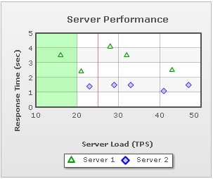

$FC->addVTrendLine("startValue=25;endValues=25;isTrendZone=0;color=FF0000;alpha=50");
# Add Second VTrendLine
$FC->addVTrendLine("startValue=10;endValue=20;alpha=25;color=00FF00");
| FusionCharts PHP Class API > Advanced Usage > Creating Trendlines & Vertical Trendlines |
| Trendline is used to display trends, targets etc. on the chart. FusionCharts ASP Class lets you create trendlines on charts. Let's find out how: |
| addTrendLine() function of FusionCharts ASP Class lets you add a Trendline. Here is an example: |
| $FC->addTrendLine("startValue=44000;color=ff0000;displayvalue=Target"); |
| This function accepts delimiter separated trendline parameters like startValue, color(in hex color code), displayValue etc. The resultant chart might look like the image below: |
|
| You can add a number of trendlines calling addTrendline() multiple times. The way of doing the same is shown below: |
| $FC->addTrendLine("startValue=42000;color=ff0000;displayvalue=Target;showOnTop=1"); $FC->addTrendLine("startValue=30000;color=008800;displayvalue=Average;showOnTop=1"); $FC->addTrendLine("startValue=50000;endValue=60000;color=0000ff;alpha=20;displayvalue=Dream Sales;showOnTop=1;isTrendZone=1"); |
| And the resultant chart is: |
|
| Creating Vertical Trendlines |
| FusionCharts PHP Class API helps you create vertical trendlines/zones on scatter (XY Plot) or Bubble charts. The addVTrendLine() function of FusionCharts PHP Class lets you create Vertical Trendlines on charts. Let's find out how: |
| # Add First VTrendLine $FC->addVTrendLine("startValue=25;endValues=25;isTrendZone=0;color=FF0000;alpha=50"); # Add Second VTrendLine $FC->addVTrendLine("startValue=10;endValue=20;alpha=25;color=00FF00"); |
| This function accepts delimiter separated vTrendline (Vertical Trendline) parameters. The resultant chart might look like the image below. |
|  |